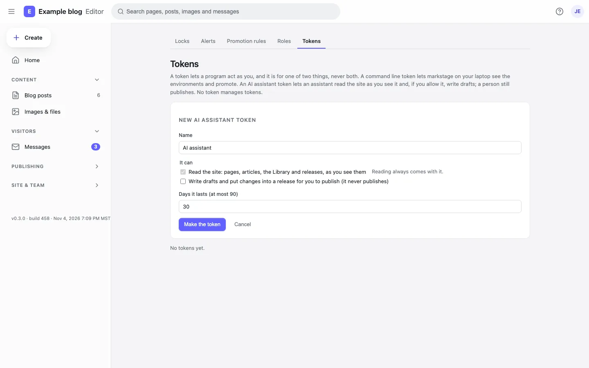

As a person, never more
An agent acts as the person whose token it holds: the same role, the same locks, the same checks and the site’s own rules. A token reads, or reads and drafts; it lasts 1 to 90 days.
Markstage works with AI in two ways today: an MCP server, so an agent such as Claude can read your site and draft changes, and suggestions in the editor for the words people find slow to write. You bring your own key, and nothing reaches the site until a person has read it.
Ships today
Claude, or any client of the Model Context Protocol, connects to your Markstage server with a token a person made for it.
An agent acts as the person whose token it holds: the same role, the same locks, the same checks and the site’s own rules. A token reads, or reads and drafts; it lasts 1 to 90 days.
It creates and changes drafts, and puts changes to live pages into a release that is not scheduled. It never deletes, moves or promotes anything, and by default a person reviews the release and puts it live.
An owner or administrator may give an agent a publish token, with a plain warning. The site’s checks run first and a failed one stops it; then the publish rules and roles decide as they would for that person. Every such publish names the agent, and a token publishes at most 5 times an hour.
It reads and writes an entry as its file’s text, so a change touches only what the agent changed. Locked and synced blocks are refused, naming the block.
A draft the agent saves is a git commit that names the agent and its token, so the history shows who did what.
Make a token in Settings → Tokens (“New AI assistant token”), then keep it with the markstage mcp relay, which passes each message from a client that starts a command on to your server:
npx markstage mcp login https://cms.example.comA client that speaks HTTP itself uses the MCP address the token screen shows, with the token as a bearer header.

Ships today
Each suggestion sits next to the value it is for. Accept, edit then accept, or dismiss: nothing changes until you accept, and ⌘S saves it like any change.
Suggest on an image’s Alt line, in an image’s settings, under a cover’s alt text, or under a picture’s alt text on a page.
Suggest title and description in the SEO check, next to the search result as Google shows it.
Draft translation under a region in Post settings, for a page in another of the site’s languages.
Summarize changes beside a promotion’s reason: what moving staging to production changes, in plain words.
Select words on the page, then Improve with AI in the format bar: rewrite, shorten, fix the spelling and grammar, or change the tone. The change shows beside the words; accept, edit or reject it.
MARKSTAGE_AI_KEY or a key file. Without one, everything else works and the editor says why suggestions are off.Coming
From the roadmap. Nothing here ships today; the badge says when it is planned.
Draft every page of a site in another language in one run, for people to review.
The whole roadmap · Coming in 0.5.0 and Planned mark what is being built and what comes later.
The MCP server and the suggestions come with the Markstage server. There is no Markstage cloud and no AI plan to buy.